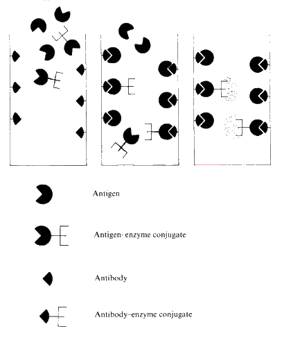
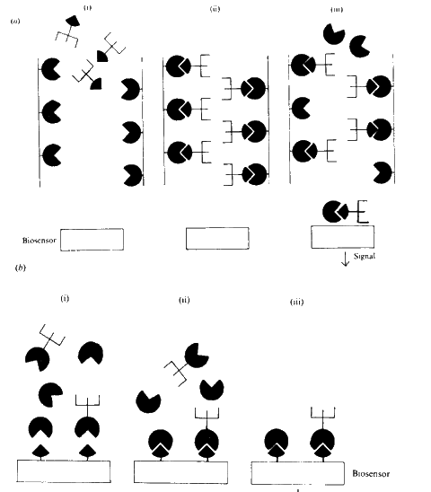

Enzyme Technology
Immunosensors
Biosensors may be used in
conjunction with enzyme-linked immunosorbent assays (ELISA). The
principles behind the ELISA technique is shown in Figure 6.9. ELISA is used to
detect and amplify an antigen-antibody reaction; the amount of enzyme-linked
antigen bound to the immobilised antibody being determined by the relative
concentration of the free and conjugated antigen and quantified by the rate of
enzymic reaction. Enzymes with high turnover numbers are used in order to
achieve rapid response. The sensitivity of such assays may be further enhanced
by utilising enzyme-catalysed reactions which give intrinsically greater
response; for instance, those giving rise to highly coloured, fluorescent or
bioluminescent products. Assay kits using this technique are now available for a
vast range of analyses.

Figure
6.9. Principles of a direct competitive ELISA. (i) Antibody, specific
for the antigen of interest is immobilised on the surface of a tube. A mixture
of a known amount of antigen-enzyme conjugate plus unknown concentration of
sample antigen is placed in the tube and allowed to equilibrate. (ii) After a
suitable period the antigen and antigen-enzyme conjugate will be distributed
between the bound and free states dependent upon their relative concentrations.
(iii) Unbound material is washed off and discarded. The amount of antigen-enzyme
conjugate that is bound may be determined by the rate of the subsequent enzymic
reaction.
Recently ELISA techniques
have been combined with biosensors, to form immunosensors, in
order to increase their range, speed and sensitivity. A simple immunosensor
configuration is shown in Figure 6.10 (a), where the biosensor merely replaces
the traditional colorimetric detection system. However more advanced
immunosensors are being developed (Figure 6.10 ( b)) which rely on the direct
detection of antigen bound to the antibody-coated surface of the biosensor.
Piezoelectric and FET-based biosensors are particularly suited to such
applications.

Figure 6.10. Principles of immunosensors. (a)(i) A tube
is coated with (immobilised) antigen. An excess of specific antibody-enzyme
conjugate is placed in the tube and allowed to bind. (a)(ii) After a suitable
period any unbound material is washed off. (a)(iii) The analyte antigen solution
is passed into the tube, binding and releasing some of the antibody-enzyme
conjugate dependent upon the antigen's concentration. The amount of
antibody-enzyme conjugate released is determined by the response from the
biosensor. (b)(i) A transducer is coated with (immobilised) antibody, specific
for the antigen of interest. The transducer is immersed in a solution containing
a mixture of a known amount of antigen-enzyme conjugate plus unknown
concentration of sample antigen. (b)(ii) After a suitable period the antigen and
antigen-enzyme conjugate will be distributed between the bound and free states
dependent upon their relative concentrations. (b)(iii) Unbound material is washed
off and discarded. The amount of antigen-enzyme conjugate bound is determined
directly from the transduced signal.
Home
| Back | Next
This page was established in 2004 and last updated by Martin
Chaplin
on
6 August, 2014
|